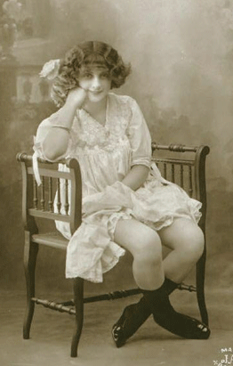
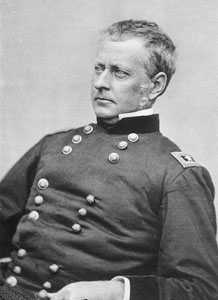

|
Women who engage in sexual intercourse for
money--prostitutes--primarily worked in the urban areas during the
19th century. It is difficult to estimate with any
reliability exactly how many prostitutes were working at any
given time given the moral stigma associated with the
profession. The best numbers available come from a study
done by Dr. William Sanger, who was a well-known expert at
the time. Studying prostitutes in New York City from 1850 to
1870, he found a steady rise in the number of women engaging
in the trade, from 5,413 in 1850 to 8,750 in 1860 to 9,894
in 1870. By 1870, when he concluded his study, Sanger
estimated that 2% of New York's women were working as
prostitutes.
Prostitutes who worked in brothels, also known as "bawdy
houses" or "bordellos" or "bagnios," tended to be favored by
the members of the upper class, and young single middle
|

A prostitute, circa 1864
|
class men living in the city on their own. These
establishments were typically run by former prostitutes,
called "madams," and were usually fairly discreet. Brothels
often served liquor and food, and would sometimes entertain
men for an entire weekend. Less affluent working class men,
such as sailors, could not afford such luxuries, and were
compelled to find prostitutes in the public places that they
were known to frequent, particularly cigar stores, dance
halls, and theaters.
The public presence of prostitutes in high profile cities
such as New York and Philadelphia called forth many moral
reform or anti-vice movements, beginning in the 1830s and
1840s and lasting to the end of the century. Christian
ministers and middle class women agitated against
prostitutes and their customers, calling for harsher laws on
the one hand, and positive programs to restore the "fallen
angels" away from their degraded lives on the other.
Victorian notions of Christian propriety elevated the status
of women based on their domesticity, purity and piety.
Obviously, the idea of young women selling their bodies for
the sexual pleasure of men was deeply disturbing to many
citizens. Yet in an era of growing poverty many prostitutes
felt forced to enter the trade, due to financial
considerations. At a time when living expenses were about
$1.50 per week for a single woman, factory and domestic jobs
paid between 75¢ and $2.00 a week. A successful prostitute,
on the other hand, could earn $50 to $100 a week.
Political authorities in cities, responding to public
outrage, regularly took steps to curtail the spread of
prostitution, passing vagrancy laws or arresting any woman
suspected of being a prostitute. In 1873, New York's
Committee for the Suppression of Legalized Vice was founded
by prominent abolitionists and feminists including Susan B.
Anthony and Elizabeth Blackwell. These female purity
reformers demanded new, and strictly enforced laws against
rape and prostitution.
There was opposition to these actions. Some doctors
fought against anti-prostitution laws, fearing they would
lose business. Even some religious conservatives opposed
steps taken to curtail prostitution, believing that God
would punish prostitutes for their immorality by giving them
sexually transmitted diseases, although most Christian
reformers believed in the redemption and reform of
prostitutes and their clients.
Sexually transmitted diseases were indeed a major risk
for prostitutes, particularly given the fact that some
diseases, such as syphilis, could be fatal. Another problem
was unwanted pregnancies. Although a number of methods of
birth control, including condoms, were available, they were
often unreliable or difficult to obtain. Rape was also a
major concern of prostitutes, and although rape laws existed
convictions were rare. Most women worked as prostitutes for
very short periods of their lives, and many came to tragic
ends.
During the Civil War, prostitution increased. From
1861-1865, the majority of women worked as nurses or in
soldier's aid societies, fulfilling their traditional roles
in as domestic nurturers. Less motherly were the thousands
of prostitutes who flocked to the cities from Washington,
D.C. and Richmond, to the lesser known depots such as
Keokuk, Iowa and Sewanee, Tennessee. Most notorious were
|

Though Maj. Gen. Joseph Hooker did
not inspire the slang term 'hooker,' his lax attitude towards
prostitution did help popularize its use.
|
Memphis and Nashville, where prostitution was placed under
military licensing to control disease, and experiment that
did not outlast the war years. One private described
Nashville's red light district, "there was an old saying
that no man could be a soldier unless he had gone through
Smokey Row...Women had no thought of dress or decency. They
said Smokey Row killed more soldiers than the war."
Many young volunteer soldiers, away from their families
for the first time, took advantage of the opportunity to
drink, gamble, and consort with the kind of women that were
scorned back at home. Soldiers stationed in or near cities
were particularly likely to solicit prostitutes, who often
walked the streets quite openly. One reporter stationed in
Washington, D.C., for example, complained that the city was
"the most pestiferous hole since the days of Sodom and
Gomorrah." Prostitutes sometimes traveled with the armies,
as well.
Some commanders were unconcerned with the sexual behavior
of their men. Generals Daniel Sickles and Joseph Hooker were
notoriously liberal in their attitudes about sex, although
the story that the slang term "Hooker" was adopted from the
general's name is not true. Most generals and junior
officers were less understanding than Sickles and Hooker,
however, and did what they could to limit their men's access
to prostitutes. This was due to a combination of moral
concerns and practical matters--men inflicted with sexually
transmitted diseases were made temporarily or permanently
unavailable for duty. Despite the best efforts of Northern
leadership, there were 182,482 diagnosed cases of syphilis
and gonorrhea among Union soldiers during the Civil War.
There is little statistical information available for
Confederate soldiers, but it can be assumed that the rates
of infection were similar.
Source: Joan Waugh, ed., Facts on File Encyclopedia of American
History: Civil War and Reconstruction, 1856 to 1869 (New York: Facts on
File, 2003), 283-284.
|